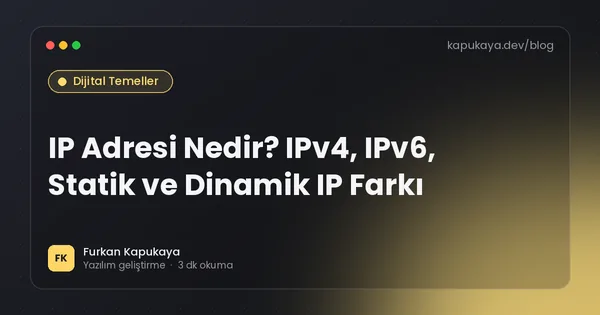
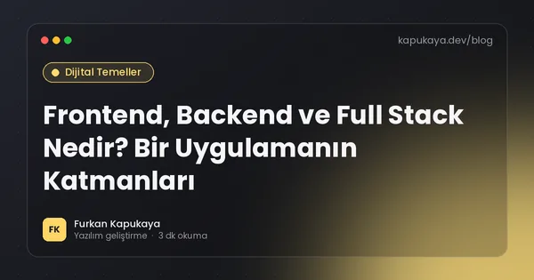
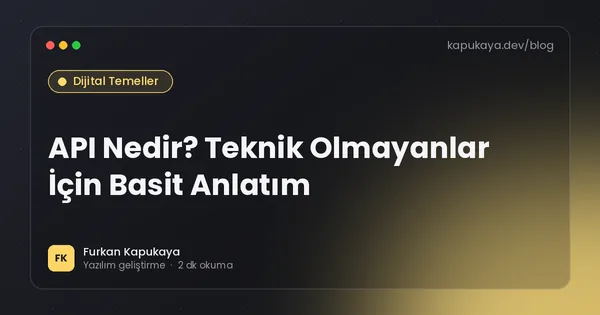
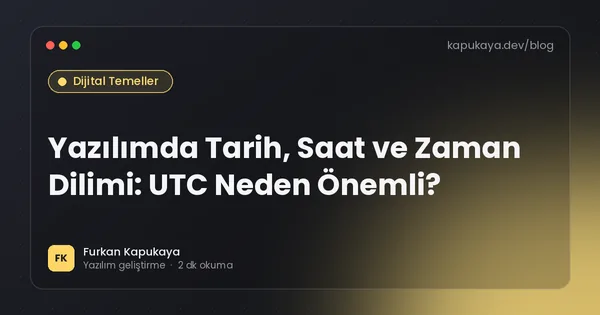
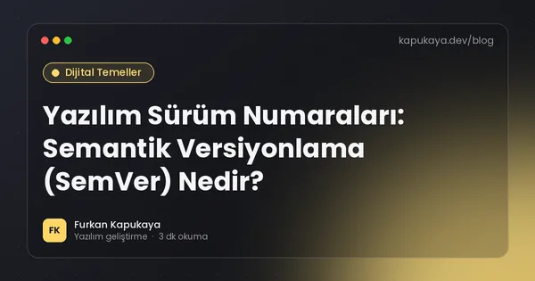
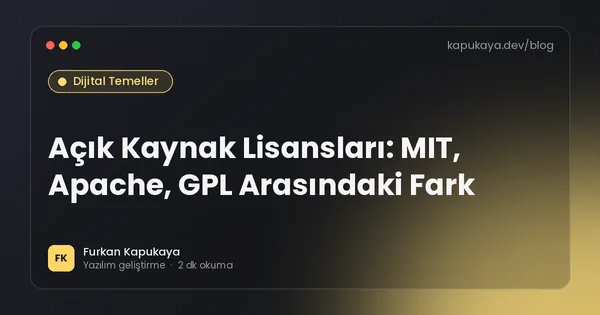
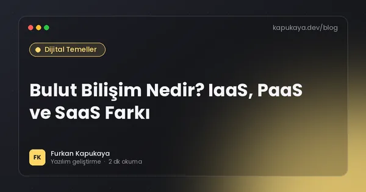

Dijital Temeller
İnternet, DNS, HTTP, veritabanı, karakter kodlama ve tarih-saat gibi yazılım dünyasının değişmeyen temel kavramları; teknik olmayanlar için de anlaşılır anlatım.
Bu konuda okuma yolları:İnternetin temelleri6 yazıYazılımın alfabesi6 yazı
13 yazı

İnternet Nasıl Çalışır? Bir Web Sayfası Açılırken Neler Olur?
Tarayıcıya bir adres yazdığınız andan sayfanın ekranda belirmesine kadar geçen adımlar: DNS, IP, TCP, TLS, HTTP ve tarayıcının sayfayı çizmesi sade bir dille.
Yazıyı oku
DNS Nedir? Alan Adı Nasıl IP Adresine Dönüşür?
DNS'in çalışma mantığı, A, AAAA, CNAME, MX ve TXT kayıtları, TTL süresi, DNS yayılımı ve alan adı taşırken sık yapılan hatalar.
Yazıyı oku
HTTP Durum Kodları: 200, 301, 404 ve 500 Ne Anlama Gelir?
HTTP durum kodlarının beş ailesi, en sık görülen 200, 201, 301, 302, 304, 400, 401, 403, 404, 429, 500 ve 503 kodlarının anlamı ve SEO ile API tasarımındaki etkileri.
Yazıyı oku
IP Adresi Nedir? IPv4, IPv6, Statik ve Dinamik IP Farkı
IP adresinin ne olduğu, IPv4 ve IPv6 farkı, özel ve genel IP, statik ve dinamik IP, NAT ve CGNAT kavramları ile işletmeler için pratik öneriler.
Yazıyı oku
Frontend, Backend ve Full Stack Nedir? Bir Uygulamanın Katmanları
Frontend ve backend'in ne olduğu, aralarındaki iletişim, kullanılan teknolojiler, full stack kavramı ve bir yazılım projesinde iş bölümünün nasıl yapıldığı.
Yazıyı oku
API Nedir? Teknik Olmayanlar İçin Basit Anlatım
API kavramının restoran garsonu benzetmesiyle sade anlatımı, gündelik hayattaki API örnekleri, API anahtarı, entegrasyon maliyeti ve işletmelerin API sorarken dikkat etmesi gerekenler.
Yazıyı oku
Veritabanı Nedir? Tablolar, Kayıtlar ve İlişkiler
Veritabanının ne olduğu, Excel tablosundan farkı, tablo, kayıt, alan, birincil ve yabancı anahtar kavramları, ilişkisel ve NoSQL veritabanları ile veri güvenliği temelleri.
Yazıyı oku
Karakter Kodlama ve UTF-8: Türkçe Karakter Sorunları Neden Olur?
Ş, ğ, ı gibi Türkçe karakterlerin neden bozuk göründüğü, UTF-8 ve Windows-1254 farkı, CSV ve Excel sorunları ile yazılımda Türkçe büyük-küçük harf (İ/ı) tuzağı.
Yazıyı oku
Yazılımda Tarih, Saat ve Zaman Dilimi: UTC Neden Önemli?
Tarih ve saati saklarken UTC kullanmanın önemi, Türkiye saatinin (UTC+3) özellikleri, yaz saati, tarih formatları, ISO 8601 ve .NET'te DateTime, DateTimeOffset ve TimeProvider kullanımı.
Yazıyı oku
Yazılım Sürüm Numaraları: Semantik Versiyonlama (SemVer) Nedir?
2.4.1 gibi sürüm numaralarının anlamı, semantik versiyonlama kuralları, ön sürümler, LTS kavramı ve kullandığınız yazılımları ne zaman güncellemeniz gerektiği.
Yazıyı oku
Açık Kaynak Lisansları: MIT, Apache, GPL Arasındaki Fark
Açık kaynak yazılım lisanslarının türleri, MIT, Apache 2.0, GPL, LGPL ve AGPL arasındaki farklar, ticari projelerde dikkat edilecekler ve lisans değişikliği riskleri.
Yazıyı oku
Bulut Bilişim Nedir? IaaS, PaaS ve SaaS Farkı
Bulut bilişimin ne olduğu, IaaS, PaaS ve SaaS modelleri, paylaşılan sorumluluk ilkesi, maliyet yönetimi ve işletmelerin buluta geçerken dikkat etmesi gereken KVKK konuları.
Yazıyı oku
Çerez, Önbellek ve Tarayıcı Verileri: Ne İşe Yarar, Ne Zaman Temizlenir?
Tarayıcı çerezleri, önbellek (cache), yerel depolama ve oturum verilerinin farkı, hangi sorunlarda temizlenmesi gerektiği ve web sitesi sahipleri için önbellek ipuçları.
Yazıyı oku
Aramanızla eşleşen yazı bulunamadı. Farklı bir kelime deneyin veya tüm yazıları gösterin.